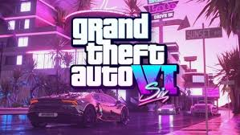

Bienvenidos a la presentación de una de las opciones más emocionantes y esperadas dentro del portal web Zona Gamer: "Juegos Nuevos". En un mundo donde la industria de los videojuegos está en constante crecimiento y evolución, Zona Gamer ha creado esta sección especial para satisfacer las necesidades de los jugadores más apasionados y curiosos que siempre buscan lo último en entretenimiento digital. "Juegos Nuevos" no solo es una categoría dentro de la página, sino una puerta de acceso a la innovación, la diversión y la emoción que solo los juegos más recientes pueden ofrecer. Hoy en día, los videojuegos no son solo una forma de entretenimiento; se han convertido en una parte fundamental de la cultura moderna, con miles de títulos que abarcan desde mundos fantásticos y aventuras épicas hasta simulaciones realistas y experiencias multijugador en línea. Los desarrolladores trabajan incansablemente para presentar al público experiencias frescas y desafiantes, y en Zona Gamer, nos aseguramos de que nuestros usuarios siempre tengan a su disposición lo mejor de lo mejor, justo en el momento en que sale al mercado. La opción "Juegos Nuevos" en la barra de menú de Zona Gamer nace como una respuesta a esta demanda de constante novedad. Su objetivo principal es ser el centro neurálgico para los jugadores que buscan descubrir los juegos más recientes y de mayor calidad en todos los géneros, plataformas y estilos posibles. Ya seas un fanático de los juegos de acción, un amante de los simuladores, un explorador de mundos abiertos, o alguien que disfruta de los títulos de estrategia, esta sección te ofrece lo último para que siempre estés al tanto de las novedades del mercado. Lo que hace única a esta sección no es solo la rapidez con la que se actualiza con los lanzamientos más recientes, sino también la manera en la que te invita a explorar y conocer juegos que quizás no habías considerado. Además de ofrecerte la posibilidad de ver los nuevos lanzamientos, "Juegos Nuevos" te ofrece un espacio donde podrás leer reseñas, ver trailers y descubrir detalles sobre cada título que lo hacen atractivo. Ya no es necesario navegar por múltiples sitios web para estar informado: Zona Gamer centraliza toda la información relevante para ti. La actualización constante de esta sección asegura que siempre tengas algo nuevo que explorar, lo que convierte a "Juegos Nuevos" en un punto esencial de Zona Gamer para todos los usuarios que buscan estar a la vanguardia de la industria. A lo largo de esta presentación, profundizaremos en cómo "Juegos Nuevos" no solo cumple con su promesa de ofrecer las últimas novedades, sino también cómo mejora la experiencia del jugador a través de un diseño interactivo y personalizado que fomenta la exploración y el descubrimiento. Al final de esta presentación, entenderás cómo la opción "Juegos Nuevos" se ha convertido en una herramienta indispensable para los gamers, ayudándoles no solo a encontrar nuevos títulos para disfrutar, sino también a conectar con la comunidad y mantener vivo el entusiasmo por lo que está por venir. ¡Prepárate para sumergirte en el fascinante mundo de las novedades y los lanzamientos más recientes del mundo de los videojuegos!
Grand Theft Auto VI (abreviado como GTA VI) es un próximo videojuego de acción-aventura de mundo abierto que está siendo desarrollado por Rockstar Games. Será la octava entrega principal de dicha serie, tras Grand Theft Auto V de 2013, y la decimosexta en total. Tras años de especulaciones y filtraciones, Rockstar confirmó que el juego estaba en desarrollo desde febrero de 2022.Su lanzamiento está previsto para finales del año 2025, inicialmente en las consolas PlayStation 5 y Xbox Series XS.
Assassin's Creed Shadows es un videojuego de acción en mundo abierto que nos lleva a explorar el Japón Fuedal mientras vivimos las las historias entrelazadas de Naoe, una experta Assassin shinobi de la provincia de Iga, y Yasuke, el poderoso samurái africano de las leyendas históricas. Con los últimos años del periodo Sengoku como telón de fondo, estos personajes, cada uno con sus propias habilidades para que cada jugador lo desarrolle como guste, descubrirá su destino común en los comienzos de una nueva era para una ubicación altamente esperada por los jugadores de la saga. Desde espectaculares ciudadelas y puertos bulliciosos hasta apacibles santuarios, pasando por paisajes asolados por la guerra esperan a todos aquellos que deseen aventurarse en su mundo abierto con n clima cambiante e impredecible, habiendo opción en esta ocasión de poder construir una guarida totalmente personalizable donde entrenar aliados, elaborar nuevo equipamiento o interactuar con personajes clave. La superproducción de Ubisoft también invita a crear una red de espías para ver y escuchar todo lo que ocurre en Japón y dar caza al siguiente objetivo.

Ghost of Yotei es Ghost of Tsushima 2, un videojuego de acción y aventura en mundo abierto por el Japón Feudal ambientado varios siglos después del lanzamiento original. Con un nuevo protagonista, una nueva historia por desarrollar y una nueva región de Japón por explorar, desde Sucker Punch Productions y PlayStation Studios buscan llevar a los jugadores a un viaje totalmente nuevo pero familiar protagonizada por Atsu en 1603 que transcurre en las tierras que rodean el monte Yotei, un imponente pico en el corazón de Ezo, una zona de Japón conocida como Hokkaido en la actualidad.

The First Berserker: Khazan se presenta como un intenso RPG de acción. En este videojuego, el jugador se convertirá en Khazan, el gran general del imperio Pell Los, que superó la muerte y se propone revelar los incidentes que llevaron a su caída y vengarse de sus enemigos. The First Berserker: Khazan adapta el universo de DNF (una de las IP más conocidas de Nexon) y garantiza al usuario experimentar el frenético estilo hack and slash de DNF mezclado con acción trepidante mientras te enfrentas a las devastadoras batallas de Khazan en una historia donde su protagonista ha de sobrevivir a la persecución implacable de las fuerzas imperiales, abrirse paso a través de conspiraciones destinadas a matar a Khazan y superar los duros entornos que se encuentre.